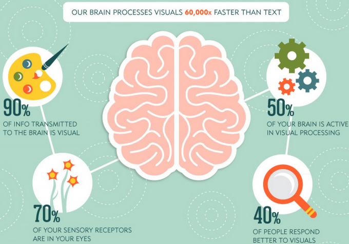
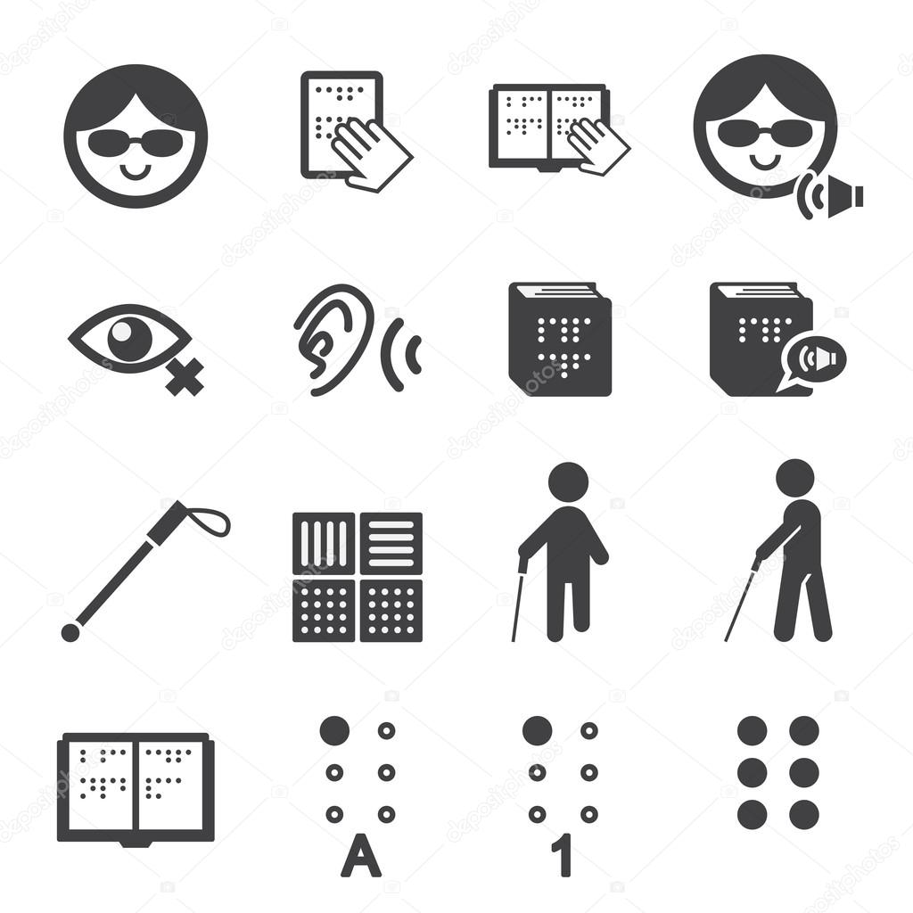
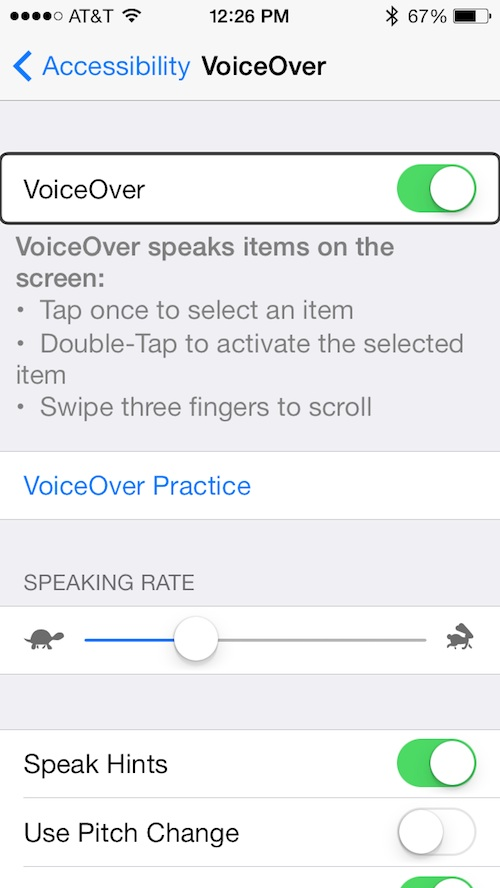
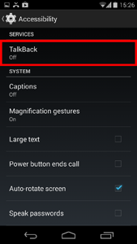
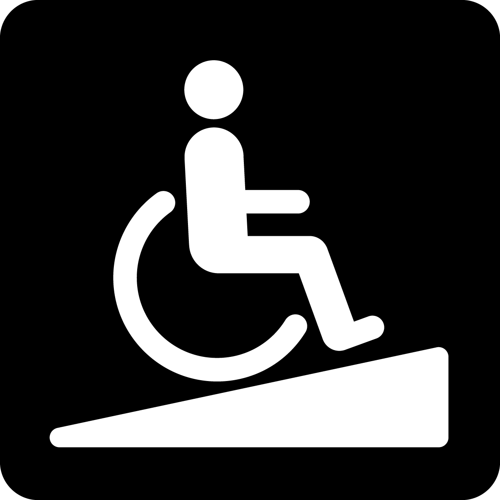
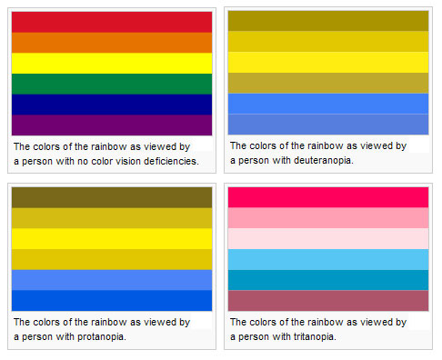

滴滴出行
--- 信息无障碍
张昆 @SIAA
信息无障碍 -- Accessibility
信息和服务能够让所有人平等、便利地获取。
信息无障碍不是一种行为或状态，而是访问信息的自由选择和使用权利。
用户可能是:
- 有视觉或者听觉障碍
- 身体官能退化的老年人
- 有一定的认知障碍
- 处在陌生的环境

用户可能使用的是:
- 不同操作系统的移动设备
- 不同操作系统的电脑
- 不同类型的信息处理机器
视觉问题
- 外界的感知信息70%来自视觉
- 视觉系统可以通过大脑产生联想
- 视觉处理速度快
视觉信息处理
视觉辅助手段
VoiceOver & Talkback
 一起体验

移动设备上的读屏技术
- 手势操作
- 文字转化为声音
- 探索应用内的其它信息
可访问编程接口
- 提供标签、提示、数值
- 确保自定义UI具有无障碍特性
辅助技术 + 可访问编程接口
不仅如此
视觉障碍
- 低视力
- 色弱色弱 
听力障碍
- 无法接听电话
- 接收声音警报困难
- 语言沟通困难
行动障碍
- 行动不便
- 单手使用设备
- 响应缓慢
- 随身物品特殊
认知障碍
- 对新界面认知不足
- 语言、文字能力差
- 极度的陌生感
平等 & 尊重
法规 & 标准 & 技术指南
《残疾人权利国际公约》
促进残疾人获得信息，以无障碍的形式向残疾人提供及时的公共信息，鼓励大众媒体、因特网信息提供商向残疾人提供无障碍服务
- 摘自 联合国《残疾人权利国际公约》
Section 508 - 美国
- 源于康复法案
- 规定联邦政府应采用各类无障碍技术
- 细致说明信息产品应该具有的无障碍特性
- 提供了诉讼依据
其它国家和地区
- 20+国家和地区有无障碍标准、技术规范、法律法规
- 以政府、公共服务为主要约束对象
W3C 标准
WCAG （Web Content Accessibility Guidelines）2.0
中文授权翻译:Web内容无障碍指南(WCAG)2.0
- W3C推荐标准，同时也是ISO标准;
- 广泛运用在Web内容、应用与及网站运营;
- 前瞻性的设计思路;
- 可运用在软件、移动设备等；
移动端编程指南
建立无障碍相关制度、条款
- 对内：无障碍机制
- 对外：宣传、公关、条款、免责
无障碍机制
- online - 应用开发机制
- offline - 服务拓展机制
应用开发机制
- 制定无障碍开发流程
- 依据标准开发
- 工具检查
- 人工测试
- 上线
线下服务机制
- 确保线下服务可以传递到各类用户
- 当某类服务不可达时，有相应的替代机制